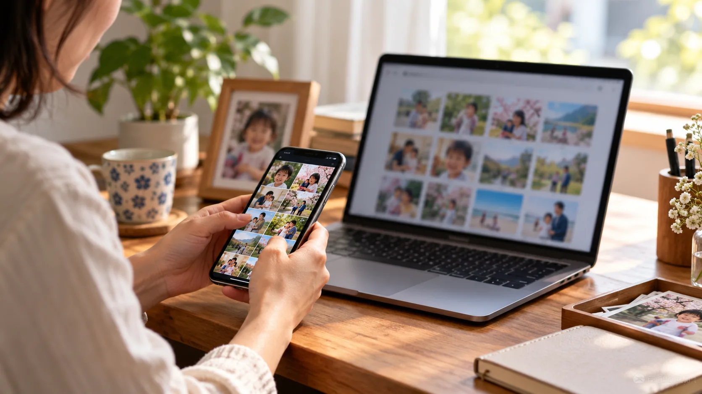
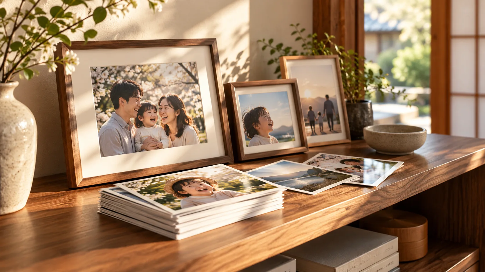
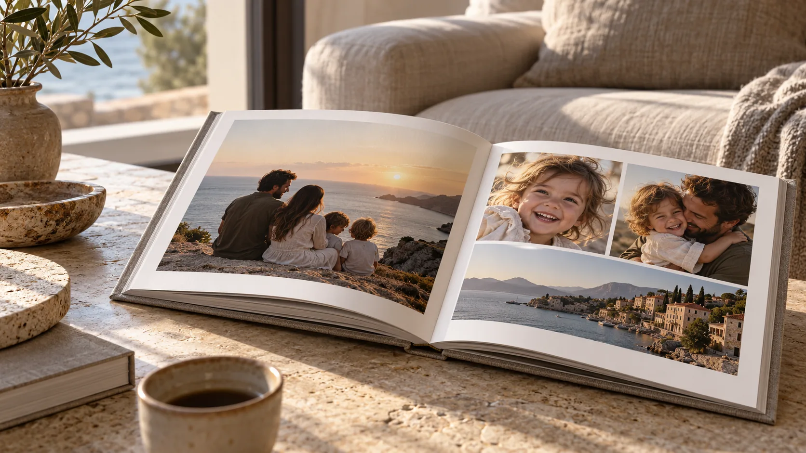

01 / SAVE
残しておく。
お気に入りの写真を、あとで見返したい場所へ。オンラインストレージの価値を生活の場面で紹介します。
PHOTO MEMORIES, MADE REAL
スマホの中で眠る写真を、何度でも見返したくなる一枚へ。
家族の時間が、暮らしの景色になる。
撮った写真には、まだ続きがある。
選んで、残して、誰かと見返して。
画面の中の思い出が、手に取れる時間に変わる。
HOZON PRINTの「プリント」と「オンラインストレージ」を、暮らしの場面から伝えるLPの提案です。
EVERYDAY, WORTH KEEPING
左右の矢印かドラッグで、場面をめぐる
THREE SIMPLE MOMENTS

お気に入りの写真を、あとで見返したい場所へ。オンラインストレージの価値を生活の場面で紹介します。
大切な一枚を見つけたら、プリントやフォトブックという選択肢へ。
手に取れる写真は、会話のきっかけになる。商品の先にある体験まで伝えます。
季節の見せ方・仮ビジュアル
年末の振り返り、年始の贈りもの、キャンペーン最終日の後押し。季節ごとに表情を変えるヘッダー案です。
HOZON PRINT SERVICES
公式サイトで案内されている3つのサービスを、目的別に紹介する想定です。

一枚を、飾る。贈る。手に取る。
もっと見る ↗
何度でも開きたくなる、家族の一冊。
もっと見る ↗写真を保存して、次の楽しみへ。
もっと見る ↗※ボタンと詳細ページはデモ用の表示です。実際の導線は受注後に確定します。
ONE MORE LOOK. ONE MORE SMILE.
LP、季節別ヘッダー、バナーを一続きの体験として設計します。
キャンペーン条件と正式素材をいただいてから、実際のご案内に仕上げます。